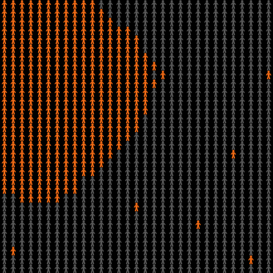
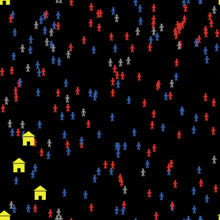
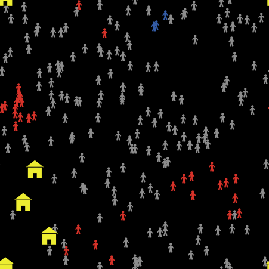
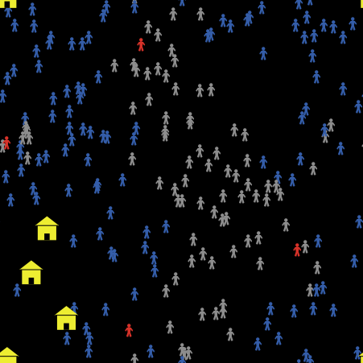
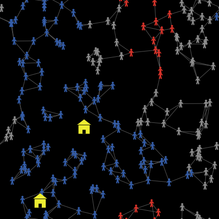
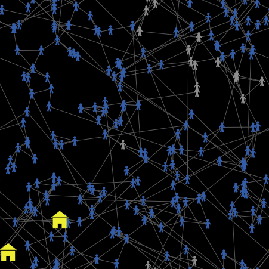
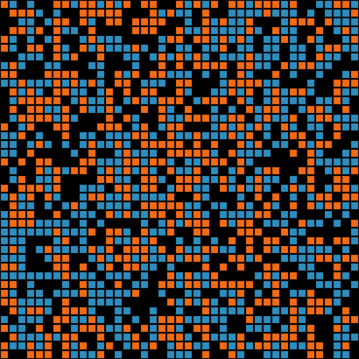
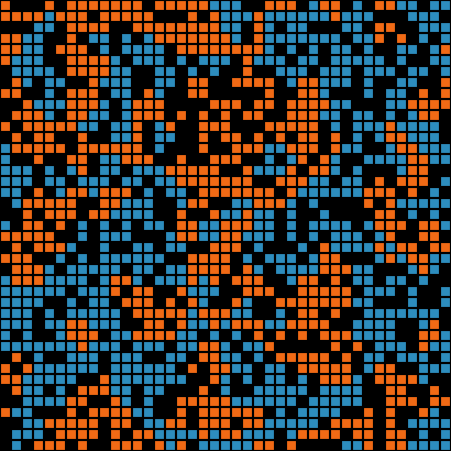

Vježbe 3: interakcije u modelu
Subota, 24.10.2026.
Završavamo model stava (rezultat i zadatak), a zatim obrađujemo četiri tipične interakcije za model na papiru.
Adil Joldić · Fakultet informacijskih tehnologija, UNMO

Plan časa: završiti model stava, pa interakcije za vaš model
| Dio | Šta | Materijal |
|---|---|---|
| Ispravke s vježbi 2 | četiri česte zabune | slajd 3 |
| 01 Rezultat | dva scenarija, kroz vrijeme, prosjek i raspodjela | v02-model-stav.nlogox |
| 02 Zadatak | razgovaraj, slusaj-medije, pa obostran razgovor | v02-zadatak.nlogox |
| 03 C# | ask kao foreach, myself kao closure | netlogo-kroz-csharp |
| 04 Blokovi interakcije | četiri pravila za model na papiru | v03-blok1 … blok4 |
| 05 Model na papiru | polja za predavanje 3 | stranica s obrascem |
Cilj
Na predavanju 2 model je prvo opisan na papiru; kodiranje dolazi poslije.
Datoteke
Model stava s vježbi 2; zadatak ima prazne razgovaraj i slusaj-medije.
Četiri bloka, svaki zaseban model s BehaviorSpace eksperimentom.
Simulacija svakog bloka u web pregledniku, mjerenja i kod u NetLogu i C#.
Isti modeli u NetLogo Webu: pravi NetLogo u web pregledniku, bez instalacije.
C# projekat: dotnet run -- pojmovi i dotnet run -- blokovi.
Verzija
Modeliranje i simulacije · Vježbe 3 · interakcije · FIT UNMO 2026/27
2
Četiri ispravke s vježbi 2
1 create-ljudi bez bloka
Ne na slučajnom mjestu. Isto vrijedi za create-sheep. Postavke idu u blok: create-ljudi 50 [ setxy random-xcor random-ycor … ].
2 Mediji stoje na mjestu
Turtle se pomjera samo kad ga neka naredba pomjeri: forward, setxy, move-to.
3 Kad u dometu nema nikoga
Zato prije [ stav ] of sagovornik treba provjeriti uslov if sagovornik != nobody.
4 ask turtles [ kreni ]
Mediji nemaju svoj go. Breed je podskup: ask ljudi [ kreni ] pomjera samo ljude.
Modeliranje i simulacije · Vježbe 3 · interakcije · FIT UNMO 2026/27
3
Primjer s predavanja 2 ima isti oblik kao model stava
| Element | Primjer s predavanja 2 | Model stava (vježbe 2) |
|---|---|---|
| Pojava | stav o davanju sitnog mita | stav o temi |
| Ko se kreće | ljudska bića | ljudi |
| Ko stoji | institucije (patchevi) | mediji (turtles koji stoje) |
| Izvana djeluje | kampanja | mediji |
| Stav | daje_mito: vjerovatnoća, 0 do 1 | stav, −1 do +1 |
| Integritet | 0 = stav se ne mijenja | 0 = mijenja se najlakše |
| Mjera | prosječan stav | prosječan stav i udio „za“ |
Ista struktura
Zato kod modela stava može biti polazna tačka za modele više tema.
Konvencija mora biti napisana
Model na papiru navodi raspon i značenje njegovih krajnjih vrijednosti.
Kako se to vidi u kodu
Veći integritet daje manju promjenu; integritet 1 znači da se stav ne mijenja.
Ista je stvar i sa stavom
To je izbor pri oblikovanju modela i mora biti naveden, kao i smjer kampanje.
Modeliranje i simulacije · Vježbe 3 · interakcije · FIT UNMO 2026/27
4
Rezultat modela stava
Dva scenarija: promjene prosjeka i raspodjele kroz vrijeme. Nastavak prezentacije v02b; rezultati su izmjereni u NetLogu 7.0.4, headless.
5
Bez medija prevladava neodlučnost, s medijima stav „za“
- 1 Dva scenarija
- 2 Kroz vrijeme
- 3 Prosjek i raspodjela



Bez medija smanjuju se i „za“ i „protiv“
Udio „protiv“ također pada: s 41% na 6% (prosjek 20 pokretanja).
Jedno pokretanje nije dovoljno za zaključak
16 od 20 pokretanja završi ispod 10%. Zato medijan i raspon.
Modeliranje i simulacije · Vježbe 3 · interakcije · FIT UNMO 2026/27
6
Bez medija prevladava neodlučnost, s medijima stav „za“
- 1 Dva scenarija
- 2 Kroz vrijeme
- 3 Prosjek i raspodjela
S medijima
Najbrže u prvih 25 sedmica: „za“ 39% → 54%.
Bez medija
Pad je simetričan, jer razgovor ne favorizuje nijednu stranu. Šta se dešava s prosjekom, pokazuje sljedeći slajd.
Modeliranje i simulacije · Vježbe 3 · interakcije · FIT UNMO 2026/27
7
Prosjek ostaje gotovo isti, a raspodjela stavova se mijenja
- 1 Dva scenarija
- 2 Kroz vrijeme
- 3 Prosjek i raspodjela
Prosjek ostaje gotovo isti
Na osnovu samog prosjeka moglo bi se zaključiti da se ništa nije promijenilo.
Raspodjela se sužava
Razgovor približava stavove sredini: prosjek ostaje gotovo isti, a izraženih stavova je sve manje.
Zato je potrebno više mjera
Ovaj efekat nije očigledan iz samih pravila; simulacija ga pokazuje.
Modeliranje i simulacije · Vježbe 3 · interakcije · FIT UNMO 2026/27
8
Zadatak
Česte greške pri unosu koda, zadatak u v02-zadatak.nlogox i tačka 3: obostran razgovor.
9
Česte greške pri unosu koda; većina prolazi bez poruke o grešci
| Zamka | Simptom | Rješenje |
|---|---|---|
| ask turtles nakon breedova | mediji se kreću; udio računat na 204 | ask ljudi · count ljudi |
| set shape person | greška pri kompajliranju | navodnici: set shape "person" |
| zaboravljen other | agent može izabrati sebe; promjena je slabija | one-of other ljudi |
| nema provjere nobody | runtime greška kad nikog nema u dometu | if sagovornik != nobody [ ... ] |
| broj-ljudi = 0 | dijeljenje nulom u update-mjere | minimum klizača 10 |
| tick unutar ask | brojač se povećava za broj agenata | tick u go, izvan ask |
| izostavljen end | nejasna poruka kod sljedeće procedure | dugme Check u kartici Code |
| stariji NetLogo | ne otvara .nlogox | svi 7.0.4 |
Modeliranje i simulacije · Vježbe 3 · interakcije · FIT UNMO 2026/27
10
Zadatak: model radi tek kada su napisane obje procedure
to razgovaraj
; ZADATAK 1: nadji sagovornika u dometu
; i promijeni svoj stav
; - one-of other ljudi in-radius domet
; - provjeri da nije nobody
; - promjena zavisi od (1 - integritet)
end
to slusaj-medije
; ZADATAK 2: ako je medij u dometu,
; primakni svoj stav poruci
; - any? mediji in-radius domet-medija
; - pomak: (poruka-medija - stav)
; - (1 - integritet) i snaga-medija
endProvjera rješenja (150 tickova)
I s medijima i bez njih. Izmjereno 36–44%.
Raspon 80,5%–99,5% u 20 pokretanja.
1 Popunite razgovaraj
Rješenje je u prezentaciji v02b, korak 3 (Interakcija); prvo pokušajte samostalno.
2 Popunite slusaj-medije
Rješenje: v02b, korak 5 (Scenariji). Zatim postavite poruka-medija na −1, pa na 0; prije pokretanja navedite očekivani ishod.
3 Neka se mijenja i sagovornik
Mijenja li se ishod ili samo brzina? Rješenje je na sljedećem slajdu.
4 uticaj = 0
Probajte s uključenim i s isključenim medijima i uporedite s dijelom Rezultat.
Modeliranje i simulacije · Vježbe 3 · interakcije · FIT UNMO 2026/27
11
Tačka 3: unutar ask sagovornik riječ stav znači stav sagovornika
to razgovaraj
let sagovornik one-of other ljudi in-radius domet
if sagovornik != nobody [
let razlika ([ stav ] of sagovornik) - stav
let moj-stav stav ; sačuvati prije promjene
set stav stav + razlika * (1 - integritet) * uticaj
ask sagovornik [
; ovdje su stav i integritet sagovornikovi
set stav stav +
(moj-stav - stav) * (1 - integritet) * uticaj
oboji
]
]
endZamka: [ stav ] of myself
Zato se stav sačuva u moj-stav prije promjene. Unutar ask sagovornik: self = sagovornik, myself = ja.
| udio „za“ (medijan i raspon) | jednosmjerno | obostrano |
|---|---|---|
| bez medija, tick 25 | 19,8% (10,5%–39,5%) | 16% (4%–33,5%) |
| bez medija, tick 150 | 2,5% (0%–49,5%) | 2,5% (0%–15%) |
| s medijima, tick 25 | 57,8% (48%–72%) | 54,3% (38,5%–66,5%) |
| s medijima, tick 150 | 94,8% (80,5%–99,5%) | 94,8% (83%–99,5%) |
20 pokretanja po varijanti. Obostrano = v03-blok1-povjerenje.nlogox s pragom 2 (razgovaraju uvijek).
Mijenja li se ishod ili samo brzina?
S medijima je na ticku 150 medijan isti u obje varijante. Bez medija obostran razgovor nešto brže smanjuje udio „za“.
Dalje: blok 1
Dio 04, blok 1.
Modeliranje i simulacije · Vježbe 3 · interakcije · FIT UNMO 2026/27
12
C#: this i myself
ask je poput foreach koji obilazi agente slučajnim redom; myself je varijabla iz vanjskog opsega. Konzolna aplikacija netlogo-kroz-csharp.
13
ask je foreach; myself je varijabla iz vanjskog opsega (closure)
to razgovaraj ; turtle procedura
let sagovornik one-of other ljudi in-radius domet
if sagovornik != nobody [
let razlika ([ stav ] of sagovornik) - stav
if abs razlika < prag [
let moj-stav stav
set stav stav +
razlika * (1 - integritet) * uticaj
ask sagovornik [
set stav stav +
(moj-stav - stav) * (1 - integritet) * uticaj
]
]
]
endNetLogo → C#
Ask prolazi kroz kopiju skupa, svaki put slučajnim redom.
public void Razgovaraj() // to razgovaraj
{
var sagovornik = ljudi.Other(this)
.InRadius(this, Globals.Domet).OneOf();
if (sagovornik != null)
{
double razlika = sagovornik.Stav - this.Stav;
if (Math.Abs(razlika) < Globals.Prag)
{
double mojStav = this.Stav;
this.Stav += razlika * (1 - this.Integritet)
* Globals.Uticaj;
World.Ask(new[] { sagovornik }, s =>
{ // s = sagovornik (self), this = ja (myself)
s.Stav += (mojStav - s.Stav)
* (1 - s.Integritet) * Globals.Uticaj;
s.Oboji();
});
}
}
}Modeliranje i simulacije · Vježbe 3 · interakcije · FIT UNMO 2026/27
14
Isti blokovi u C# daju iste raspone kao NetLogo
| Blok | Mjera (prosjek pokretanja) | NetLogo | C# |
|---|---|---|---|
| 1 ograničeno povjerenje | broj grupa, tick 500, prag 0,1 / 0,2 / 0,5 | 6,4 / 4,2 / 1,7 | 5,8 / 3,7 / 1,7 |
| 1 ograničeno povjerenje | udio „za“, tick 150, s medijima, prag 1 / 2 | 0,90 / 0,90 | 0,86 / 0,91 |
| 2 prag i kaskada | talas od 200 pokretanja, rasipanje 0 / 0,05 / 0,1 | 43 / 76 / 194 | 38 / 85 / 192 |
| 3 mreža poznanstava | udio „za“, tick 500, daleke veze 0 / 0,2 / 1 | 0,43 / 0,71 / 0,92 | 0,39 / 0,73 / 0,93 |
| 4 preseljenje | prosječno sličnih na kraju, traženo 0,3 / 0,5 | 0,745 / 0,888 | 0,744 / 0,887 |
| Wolf Sheep (v02) | broj ovaca / vukova od ticka 100, 20 pokretanja | 164 / 76 | 162 / 75 |
dotnet run -- pojmovi # ask, with, die, hatch, torus …
dotnet run -- blokovi # četiri bloka, tabela iznad
dotnet run -- model --seed 1 --mapa # Wolf SheepZašto brojke nisu iste
Razlike su unutar rasipanja: dva NetLogo mjerenja pri istim postavkama u bloku 2 dala su talas u 76 i 92 od 200 pokretanja.
Modeliranje i simulacije · Vježbe 3 · interakcije · FIT UNMO 2026/27
15
Blokovi interakcije
Četiri tipične interakcije. Svaka je pravilo za model na papiru, izmjerena u NetLogu, s kodom u NetLogu i C#.
16
Četiri interakcije; svaka je jedna rečenica u modelu na papiru
1 Ograničeno povjerenje
Mali prag daje više odvojenih grupa; poruka ne mijenja stavove koji se znatno razlikuju od nje.
2 Prag i kaskada
Ishod je sve ili ništa; vjerovatnoća talasa zavisi od rasipanja pragova i broja pokretača.
3 Mreža poznanstava
Daleke veze prenose poruku dalje od izvora.
4 Preseljenje
Blaga sklonost daje jaku podjelu susjedstava.
Već imate (vježbe 2)
Stranica v03-blokovi-interakcije.html ima simulaciju svakog bloka, mjerenja i kod u NetLogu i C#.
Modeliranje i simulacije · Vježbe 3 · interakcije · FIT UNMO 2026/27
17
Blok 1: razgovor mijenja stav samo kad su stavovi dovoljno blizu
- 1 Ograničeno povjerenje
- 2 Prag i kaskada
- 3 Mreža poznanstava
- 4 Preseljenje
Pravilo
Inače se ništa ne mijenja. Isto pravilo vrijedi za poruku medija.
Ishod
Uz prag do 0,5 mediji ne mijenjaju udio „za“: na ticku 150 medijan 34%–40%, kao na početku.
Bez medija, 10 pokretanja po pragu. Raspon: prag 0,1 → 4–8 grupa, 0,2 → 3–5, 0,3 → 2–4.
Jedno pokretanje (random-seed 1): 4 grupe stavova. Isto sjeme uz prag 2 daje 1 grupu.
U ovom bloku ne mijenja. Kako je u vašoj pojavi?
Deffuant i sar. (2000); Hegselmann i Krause (2002).
Novo u odnosu na model stava: if abs razlika < prag.
Modeliranje i simulacije · Vježbe 3 · interakcije · FIT UNMO 2026/27
18
Blok 2: čovjek se pridružuje kada se pridruži dovoljan udio susjeda
- 1 Ograničeno povjerenje
- 2 Prag i kaskada
- 3 Mreža poznanstava
- 4 Preseljenje
Pravilo
Nekoliko pokretača ustane bez obzira na druge.
Ishod
Ishod je sve ili ništa: uz rasipanje do 0,2 na kraju svakog pokretanja stoji manje od 10% ili više od 90% ljudi.
Rasipanje praga je standardna devijacija pragova. Prosjek praga 0,3, 10 pokretača, 200 pokretanja po vrijednosti.
Jedno pokretanje ne govori koliko je talas vjerovatan.
Granovetter (1978). Pokretača 5 → talas u 20%, 20 → u 88% pokretanja (rasipanje 0,05).
with prvo izdvoji sve koji trebaju ustati; zatim ask izvrši naredbu za ustajanje.
Modeliranje i simulacije · Vježbe 3 · interakcije · FIT UNMO 2026/27
19
Blok 3: uticaj se prenosi preko poznanika, a ne prolaznika
- 1 Ograničeno povjerenje
- 2 Prag i kaskada
- 3 Mreža poznanstava
- 4 Preseljenje
Pravilo
Početne veze su s 3 najbliže osobe; dio se preusmjeri na ljude bilo gdje. Poruku medija čuju samo ljudi blizu kuće.
Ishod
Udio „za“ na ticku 500 (medijan): 44% · 53% · 77% · 95% uz 0 · 5% · 20% · 100% dalekih veza. Na početku oko 40%.
Za opis veza potrebni su broj poznanika po osobi i broj poznanika koji žive daleko.
Dvije kuće medija, 20 pokretanja po vrijednosti. Raspon je velik: bez dalekih veza 22%–72%.
Watts i Strogatz (1998).


Isto sjeme (random-seed 2), tick 500: bez dalekih veza 56,5% „za“ (lijevo), uz 20% dalekih veza 91,5% (desno).
Novo: create-links-with min-n-of 3 other ljudi [ distance myself ]; u razgovaraj one-of link-neighbors.
Modeliranje i simulacije · Vježbe 3 · interakcije · FIT UNMO 2026/27
20
Blok 4: ko oko sebe ima premalo sličnih, preseli se
- 1 Ograničeno povjerenje
- 2 Prag i kaskada
- 3 Mreža poznanstava
- 4 Preseljenje
Pravilo
Inače ostaje. Svako pripada jednoj od dvije grupe.
Ishod
Na početku je prosječno 50% susjeda iz iste grupe; uz traženih 50% na kraju 88%–90%. Gustina 70%.
Koja mjera u vašem modelu bi to pokazala?
Gustina 70%, 10 pokretanja po vrijednosti. Siva linija: traženo.
Schelling (1971); Models Library: Social Science → Segregation.


Jedno pokretanje (random-seed 4, traženo 30%): na početku 49% sličnih (lijevo); svi zadovoljni nakon 10 mjeseci, 77% (desno).
Novo: move-to one-of patches with [ not any? ljudi-here ] i [ grupa ] of myself unutar with.
Modeliranje i simulacije · Vježbe 3 · interakcije · FIT UNMO 2026/27
21
Model na papiru
Za predavanje 3 (27.10.2026.): polja redom kao u primjeru s predavanja 2. Blok interakcije ulazi u polje 8.
22
Model na papiru: devet polja; blok interakcije ulazi u polje 8
Društvenu pojavu opisati jednom rečenicom.
Šta model treba pokazati, uz preciznu definiciju glavnog pojma.
Koji period model obuhvata i šta predstavlja jedan tick.
Prostor i ono što djeluje izvana (kampanja, pravila).
Ko se kreće (turtles), a ko ostaje na mjestu (patchevi ili nepokretni agenti).
Zapisati sve atribute, pa precrtati one za koje nema podataka; uz svaki navesti raspon i značenje krajnjih vrijednosti.
Globalna mjera kojom se provjerava ostvarenje cilja.
Svaku opisati rečenicom „Kada …: ako …, …; inače …“.
Šta još nije odlučeno i za koji parametar nema izvora.
Primjer: polje 8
Blok 1. Za prag treba izvor: anketa ili istraživanje.
Primjer: polje 6
Obrnuta konvencija je jednako ispravna ako je napisana.
Predavanje 3, 27.10.
Obrazac za kopiranje je na stranici v03-blokovi-interakcije.html.
Modeliranje i simulacije · Vježbe 3 · interakcije · FIT UNMO 2026/27
23
Prilog
Kod četiri bloka u NetLogu, sva mjerenja i literatura.
24
Prilog 1 — kod: blok 1 i blok 2 (NetLogo)
to razgovaraj
let sagovornik one-of other ljudi in-radius domet
if sagovornik != nobody [
let razlika ([ stav ] of sagovornik) - stav
if abs razlika < prag [ ; NOVO
let moj-stav stav
set stav stav + razlika * (1 - integritet) * uticaj
ask sagovornik [
set stav stav +
(moj-stav - stav) * (1 - integritet) * uticaj
oboji
]
]
]
end
to slusaj-medije
if any? mediji in-radius domet-medija [
if abs (poruka-medija - stav) < prag [ ; NOVO
set stav stav + (poruka-medija - stav)
* (1 - integritet) * snaga-medija
]
]
endto go
; with prvo izabere sve koji ustaju, pa ih pita
let ustaju ljudi with
[ not aktivan? and udio-oko-mene >= moj-prag ]
if not any? ustaju [ stop ]
ask ustaju [
set aktivan? true
oboji
]
update-mjere
tick
end
to-report udio-oko-mene
let oko-mene ljudi-on neighbors
report (count oko-mene with [ aktivan? ])
/ (count oko-mene)
end
; u setup: pragovi i pokretači
set moj-prag ogranici
(random-normal prosjek-praga rasipanje-praga)
ask n-of pokretaci ljudi [ set aktivan? true ]Modeliranje i simulacije · Vježbe 3 · interakcije · FIT UNMO 2026/27
25
Prilog 1 — kod: blok 3 i blok 4 (NetLogo)
to napravi-mrezu
; myself = onaj koji traži poznanike
ask ljudi [
create-links-with
min-n-of broj-veza other ljudi [ distance myself ]
]
ask links [ ; dio veza vodi bilo gdje
if random-float 1 < udio-dalekih-veza [
let a end1
let novi one-of ljudi with
[ self != a and not link-neighbor? a ]
if novi != nobody [
ask a [ create-link-with novi ]
die
]
]
]
end
to razgovaraj
let sagovornik one-of link-neighbors ; NOVO
if sagovornik != nobody [
let razlika ([ stav ] of sagovornik) - stav
set stav stav + razlika * (1 - integritet) * uticaj
]
endto go
if not any? ljudi with [ not zadovoljan? ] [ stop ]
ask ljudi with [ not zadovoljan? ] [ preseli-se ]
procijeni
update-mjere
tick
end
to procijeni
ask ljudi [
let oko-mene ljudi-on neighbors
set susjeda count oko-mene
; [ grupa ] of myself = grupa onoga ko gleda
set slicnih count oko-mene
with [ grupa = [ grupa ] of myself ]
set zadovoljan?
slicnih >= trazeni-udio-slicnih * susjeda
]
end
to preseli-se
move-to one-of patches with [ not any? ljudi-here ]
endModeliranje i simulacije · Vježbe 3 · interakcije · FIT UNMO 2026/27
26
Prilog 2 — mjerenja (NetLogo 7.0.4, headless)
| Blok | Uslov | Mjera | Rezultat | n |
|---|---|---|---|---|
| 1 | prag 0,1 / 0,2 / 0,3 / 0,5 / 1 / 2; bez medija | broj grupa, tick 500 (medijan) | 7 / 4 / 3 / 2 / 1 / 1 | 10 |
| 1 | prag 0,1 / 0,2 / 0,3 / 0,5 / 1 / 2; s medijima | udio „za“, tick 150 (medijan) | 39% / 39% / 34% / 40% / 94% / 92% | 10 |
| 2 | rasipanje praga 0 / 0,05 / 0,1 / 0,15 | pokretanja s talasom | 22% / 38% / 97% / 100% | 200 |
| 2 | pokretača 5 / 10 / 20 / 40 (rasipanje 0,05) | pokretanja s talasom | 20% / 46% / 88% / 100% | 200 |
| 2 | prosjek praga 0,25 / 0,3 / 0,35 / 0,4 (rasipanje 0,1) | pokretanja s talasom | 100% / 96% / 37% / 0% | 200 |
| 3 | daleke veze 0 / 0,05 / 0,2 / 1; 2 kuće | udio „za“, tick 500 (medijan) | 44% / 53% / 77% / 95% | 20 |
| 4 | traženo 0,2 / 0,3 / 0,5 / 0,75; gustina 0,7 | prosječno sličnih na kraju (medijan) | 59,3% / 74,7% / 88,8% / 99,8% | 10 |
| v02 | jednosmjerno / obostrano; s medijima | udio „za“, tick 150 (medijan) | 94,8% / 94,8% | 20 |
Razlika proizlazi iz rasipanja između uzoraka od 200 pokretanja; zato se ovakve brojke navode približno.
Modeliranje i simulacije · Vježbe 3 · interakcije · FIT UNMO 2026/27
27
Prilog 3 — literatura i datoteke
Literatura
Modeli i eksperimenti
Eksperimenti u modelima imaju po 2 pokretanja, za provjeru uživo.
NetLogo_Console.exe --headless
--model v03-blok2-prag.nlogox
--experiment rasipanje
--table rezultat.csvModeliranje i simulacije · Vježbe 3 · interakcije · FIT UNMO 2026/27
28